Blog
Ismerd meg a különböző kávé fajtákat és tudd meg, miért érdemes a kávét minden nap élvezni.
A kávézás művészete
A kávézás több mint egy egyszerű reggeli rutin – valódi művészet, amely generációk óta formálódik és finomodik. Egy csésze kávé képes elindítani a napot, inspirációt adni egy fáradt délutánon, vagy megkoronázni egy baráti beszélgetést. De mi teszi igazán művészivé ezt a rituálét?
A tökéletes alapanyag: a kávébab
A kávézás művészete az alapoknál kezdődik: a kávébabbal. A világon két fő típusú babot ismerünk: az arabica és a robusta. Az arabica bársonyos, enyhén savas ízvilágával hódít, míg a robusta erőteljesebb, karakteresebb ízt kölcsönöz a kávénak. A minőségi kávé titka a friss, gondosan válogatott babokban rejlik.
A pörkölés: ahol az ízek kibontakoznak
A pörkölés során dől el, hogy milyen aromák kerülnek előtérbe. A világos pörkölés könnyed, gyümölcsös ízvilágot hoz létre, míg a sötét pörkölés testesebb, csokoládés jegyekkel ajándékoz meg minket. A pörkölőmesterek szakértelme és tapasztalata alapvető a tökéletes íz eléréséhez.
A főzési technika: a kreativitás terepe
A kávé elkészítése igazi alkotói folyamat. Az eszpresszógép elegáns precizitása, a filterkávé letisztult egyszerűsége vagy a cold brew frissessége mind-mind külön világot képviselnek. A baristák ügyessége és a választott technika meghatározza a végeredményt.
A rituálé: amikor a kávé életérzés
A kávézás nem csak az ízekről szól. Az élményhez hozzátartozik a csészék kiválasztása, a hab latte art formába öntése és az a pillanat, amikor az első korty érinti az ajkunkat. Egy forró eszpresszó egy olasz piazzán, egy habos cappuccino egy hangulatos kávézóban – mindezek a pillanatok hozzáadnak az élményhez.
Kávé és közösség: az összetartozás ereje
A kávézás közösségi élmény is. A baráti beszélgetések, az üzleti találkozók és a meghitt otthoni pillanatok gyakran egy csésze kávé mellett zajlanak. A kávéházak élettel teli színterei egyedi varázst kölcsönöznek a mindennapoknak.
A művészeted: találd meg a saját stílusod
A kávézás művészete személyes – mindenki megtalálhatja a saját rituáléját. Lehet, hogy a reggeli eszpresszó az, ami felébreszt, vagy egy délutáni latte, ami nyugalmat hoz. A lényeg, hogy élvezd a folyamatot, és hagyd, hogy a kávé inspiráljon!
 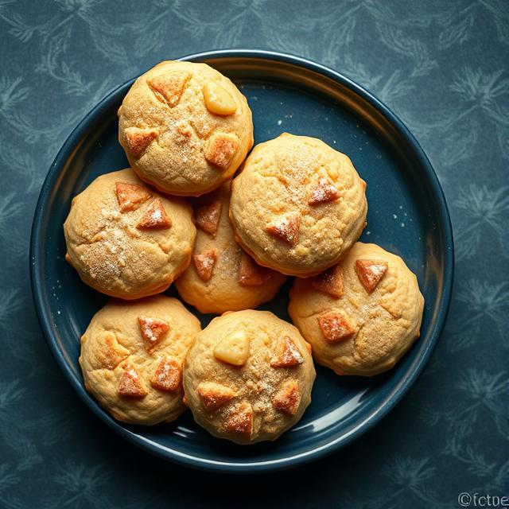
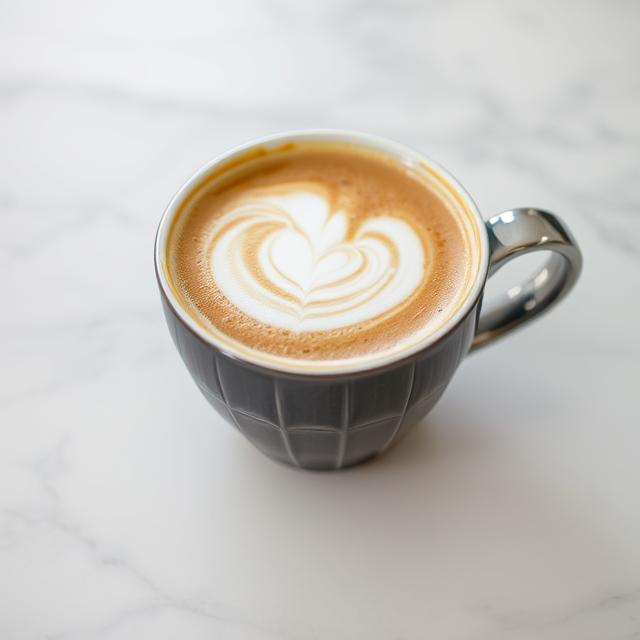
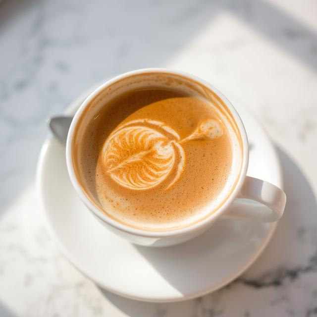
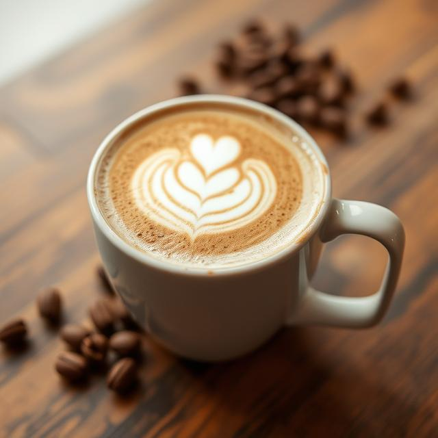
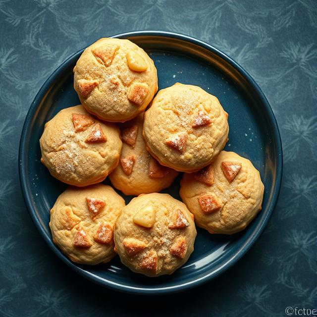
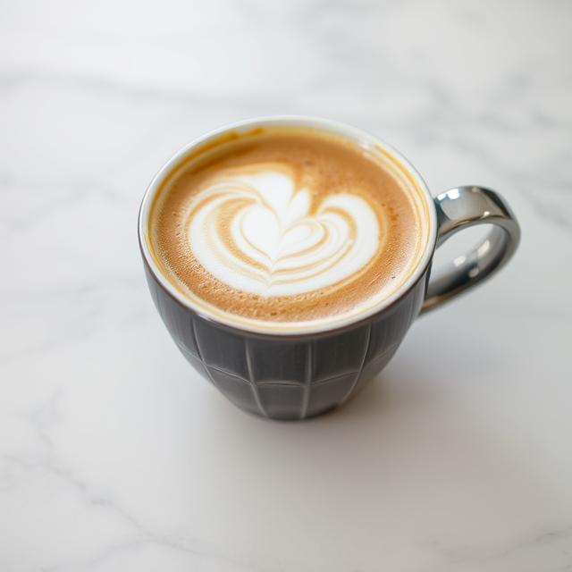
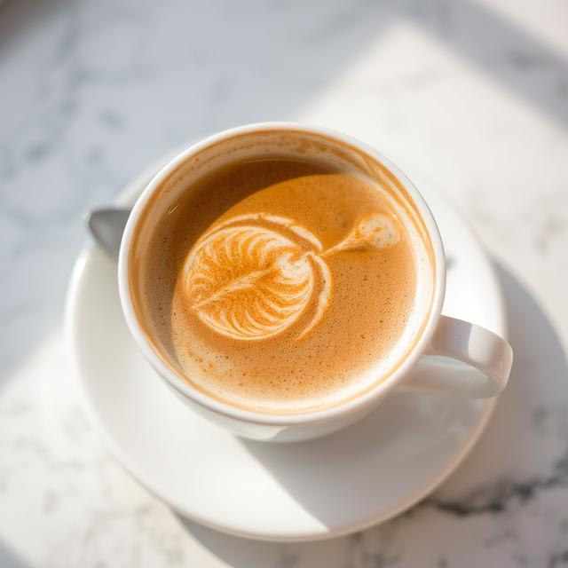
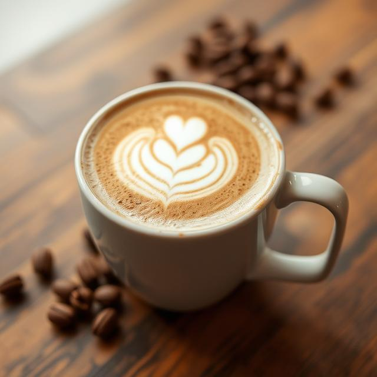
 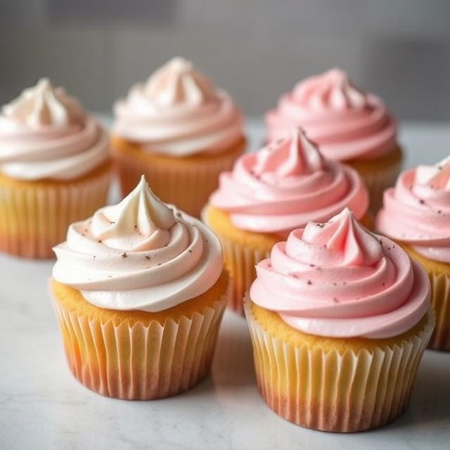
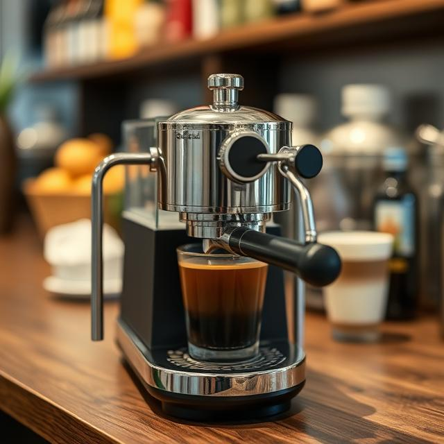
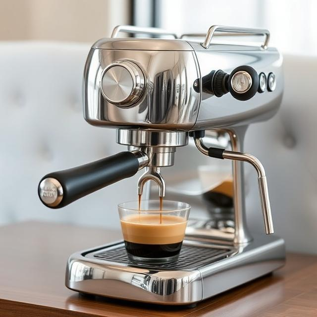
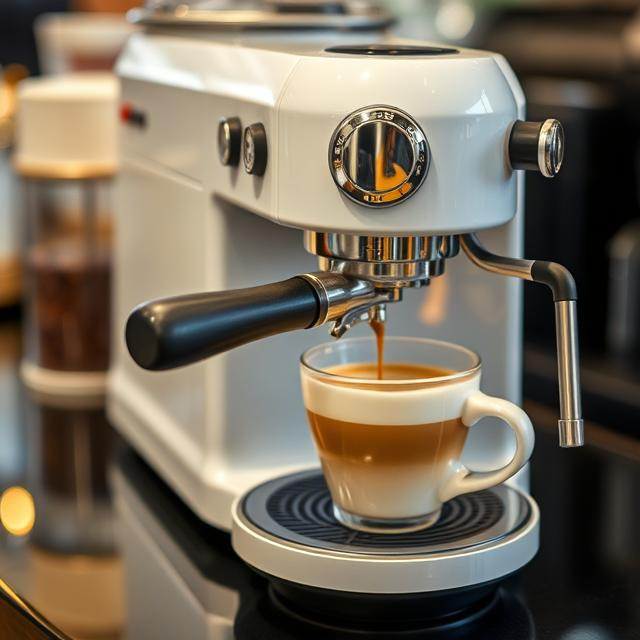
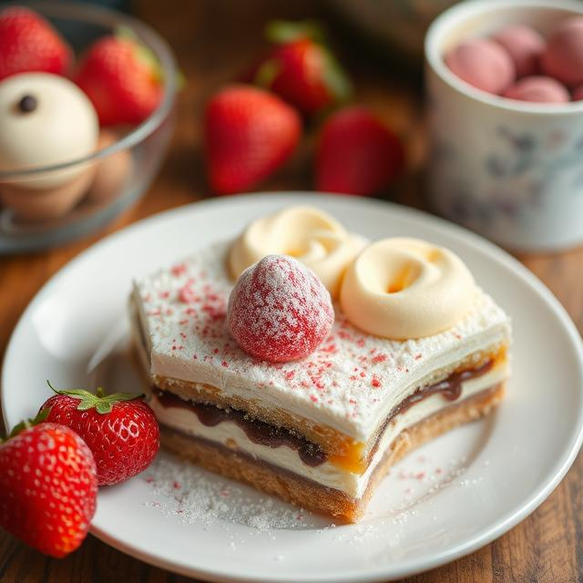
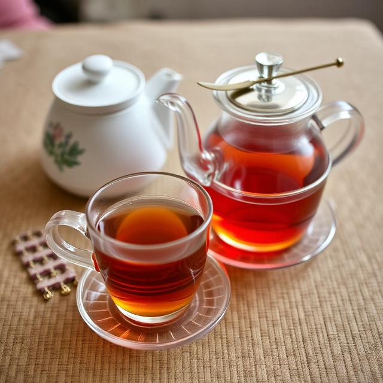
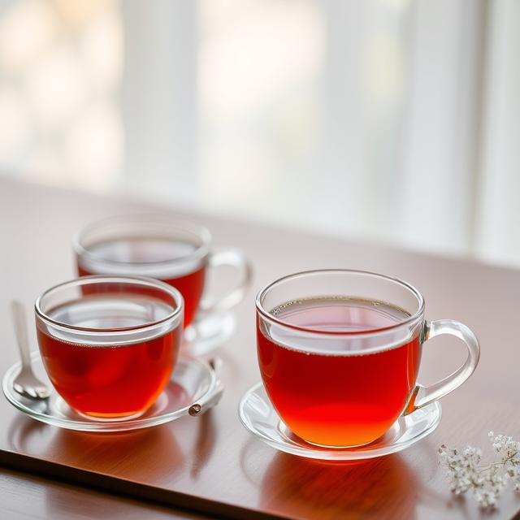
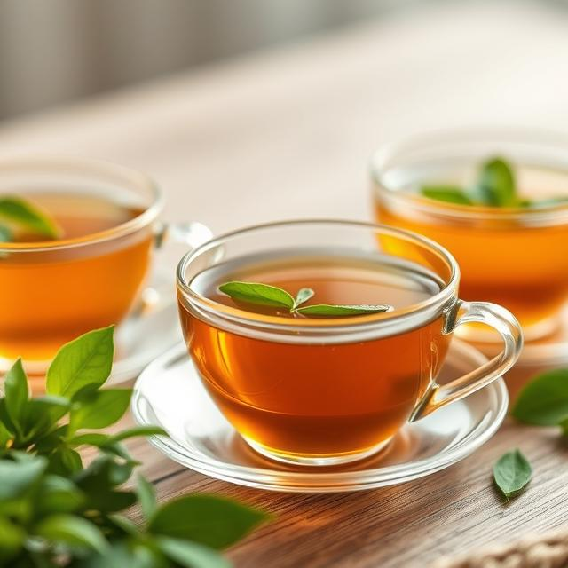
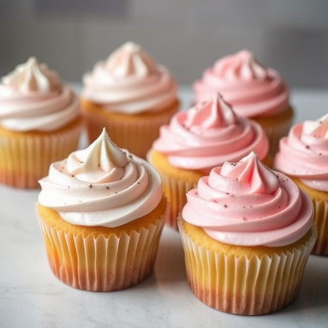
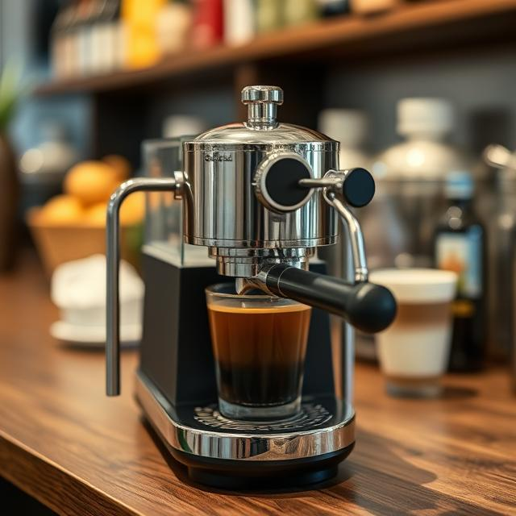
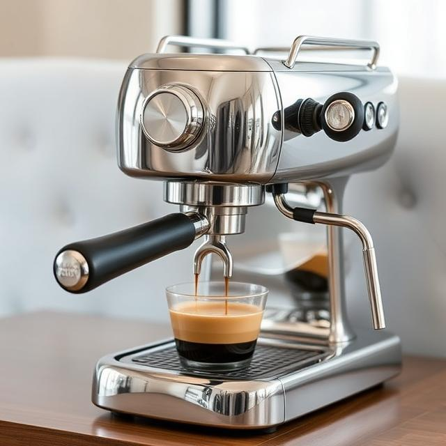
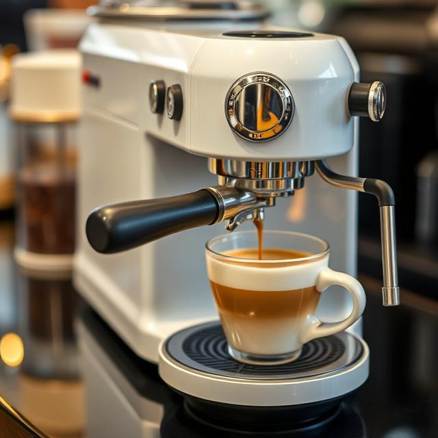
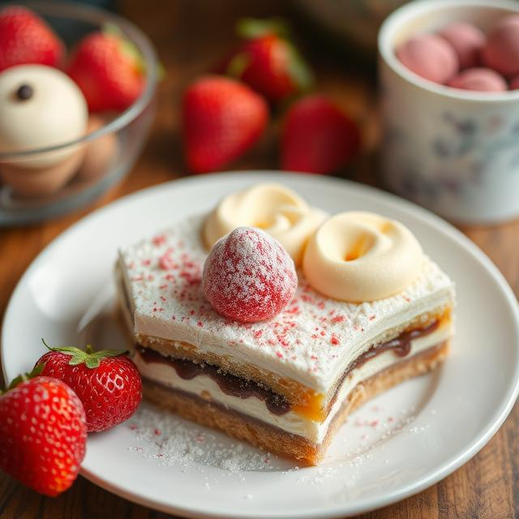
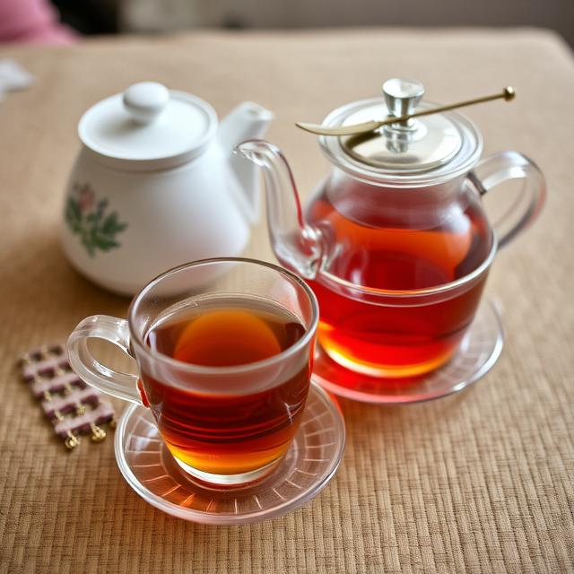
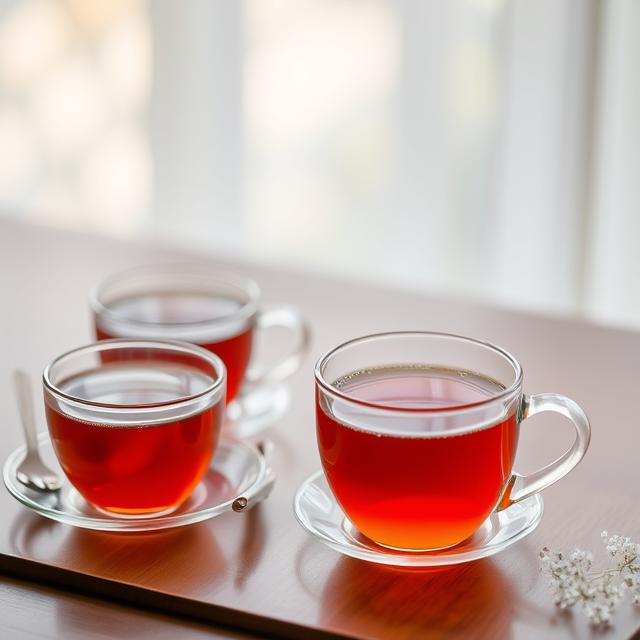
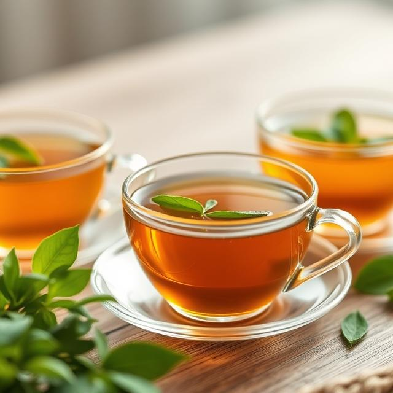